ЛАБОРАТОРНА РОБОТА №3
Тема: БЛОЧНА ВЕРСТКА HTML-ДОКУМЕНТУ ЗА МАКЕТОМ.
Постановка задачі лабораторної роботи №3
Придбати практичні навички роботи верстки сторінок засобами CSS, верстки на основі плаваючих елементів, з’ясувати переваги та недоліки типів макетів веб-сторінок
Середовища, в яких ми працювали: Всеволод - Visual Studio Code, Аня - WebStorm, Ангеліна - блокнот
Зовнішній вигляд макету
Всеволод:
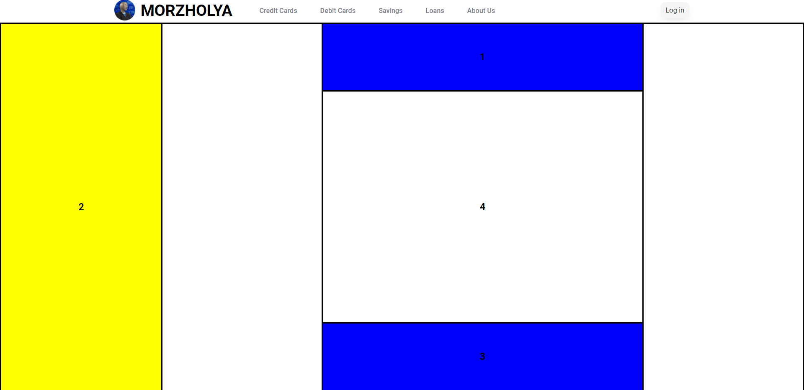Ангеліна:
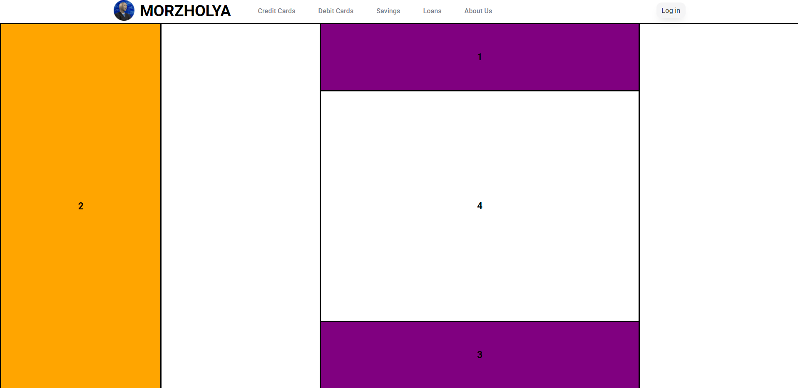Аня:
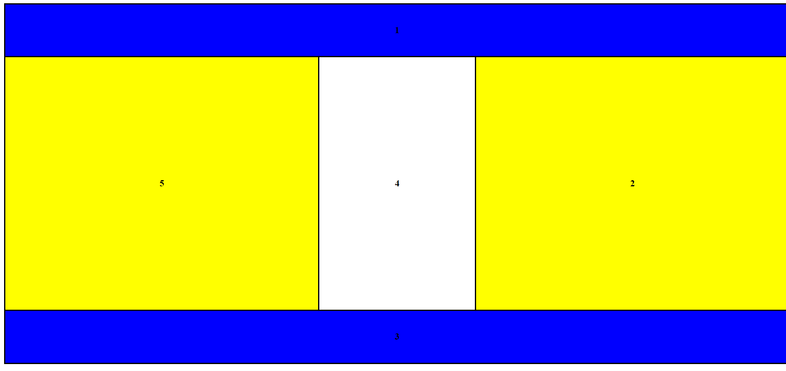Розмітка сторінки за допомогою таблиці
Всеволод:
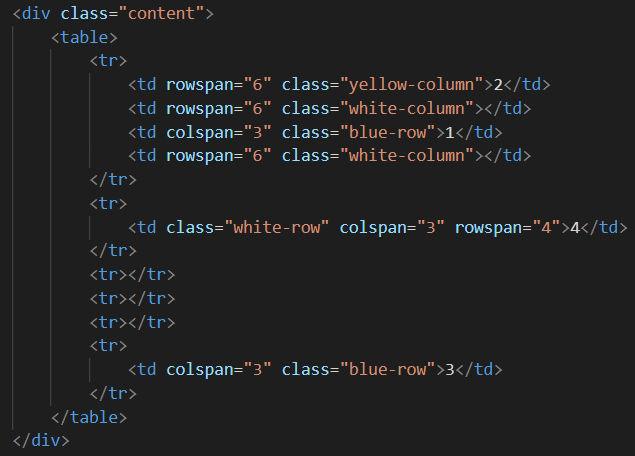 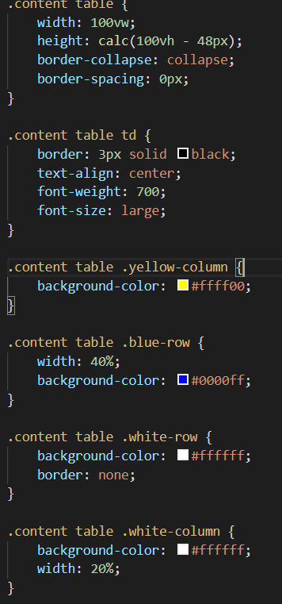Ангеліна:
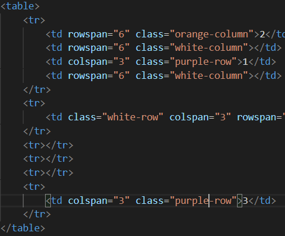 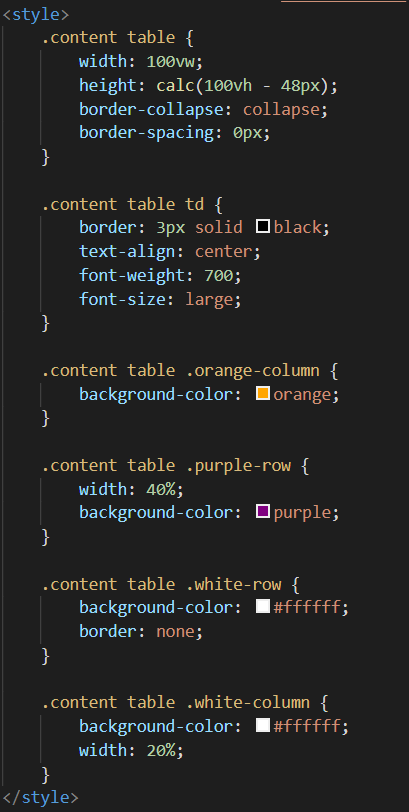Аня:
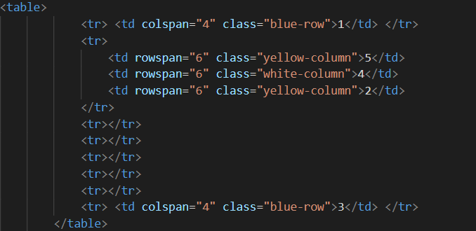 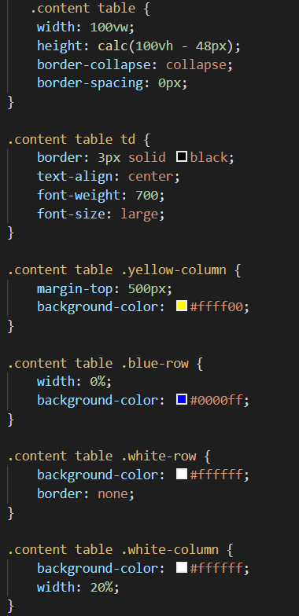Розмітка сторінки за допомогою плаваючих блоків
Всеволод:
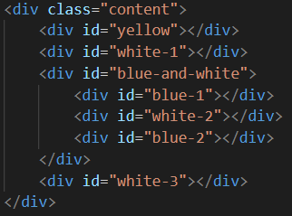 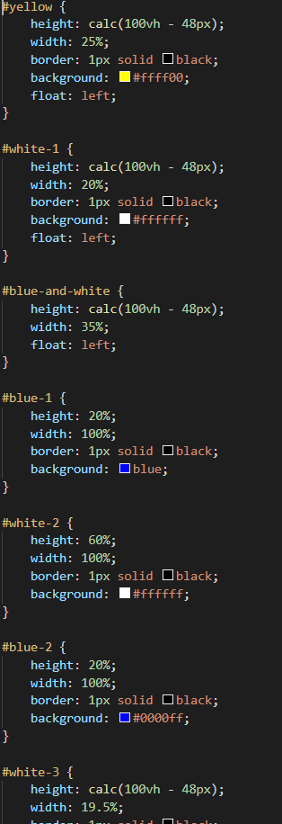Ангеліна:
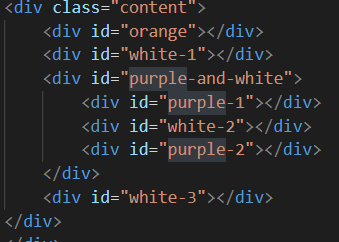 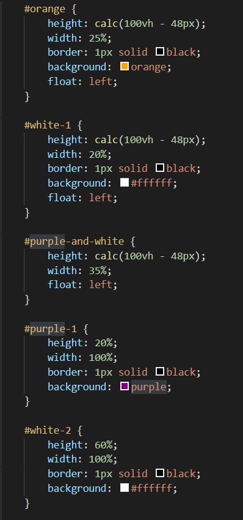Аня:
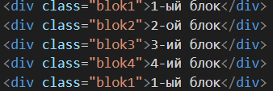 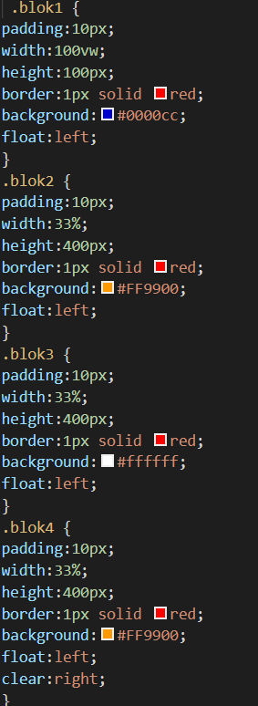Висновки:
У цій лабораторній роботі ми навчилися робити розмітку двома типами: за допомогою таблиці та за допомогою плаваючих блоків. Очевидно, що перевага надається розмітці за допомогою плаваючих блоків, тому що таблична розмітка конструюється досить довго та складно та не є гнучкою, у ній складно зробити зміни, на відміну від плаваючих блоків.